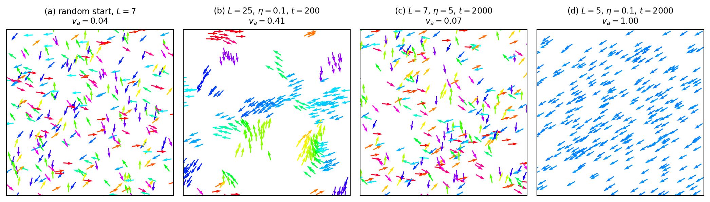
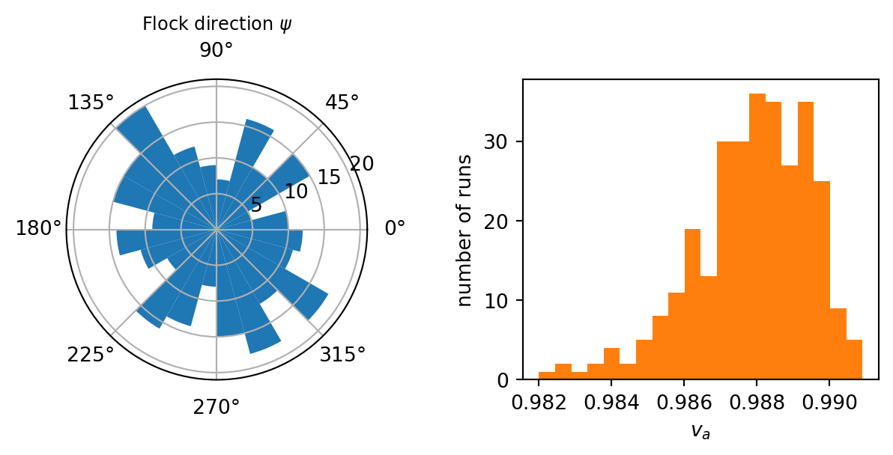
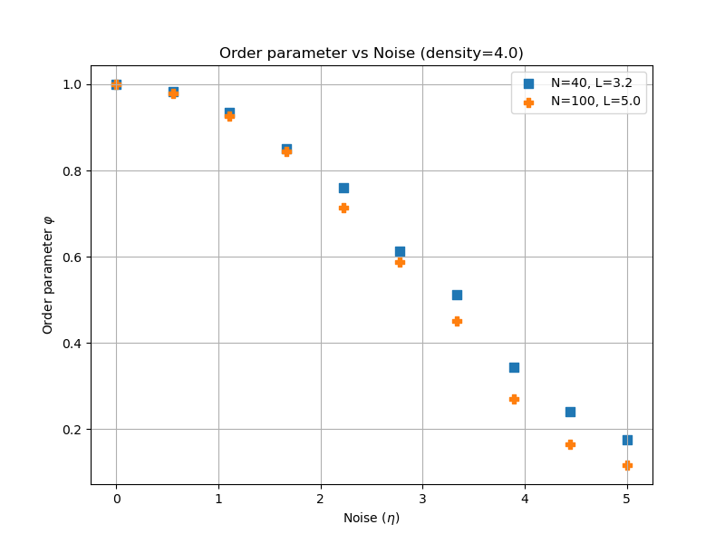

import numpy as np
import matplotlib.pyplot as plt
def vicsek_step(xy, theta, eta, L, r=1.0, v0=0.03, rng=np.random):
"""One synchronous Vicsek update with periodic (minimum-image) distances."""
dx = xy[:, :, None] - xy[:, None, :] # displacements, shape (2, N, N)
dx -= L * np.round(dx / L) # nearest periodic copy
nbr = (dx**2).sum(axis=0) <= r**2 # N_i(t), includes i itself
theta_avg = np.arctan2(nbr @ np.sin(theta), nbr @ np.cos(theta))
theta_new = theta_avg + eta * (rng.uniform(size=theta.size) - 0.5)
xy_new = (xy + v0 * np.array([np.cos(theta_new), np.sin(theta_new)])) % L
return xy_new, theta_new
def order_parameter(theta):
return abs(np.exp(1j * theta).mean())
def run(N, L, eta, steps, seed):
rng = np.random.RandomState(seed)
xy = rng.uniform(0, L, (2, N))
theta = rng.uniform(0, 2 * np.pi, N)
for _ in range(steps):
xy, theta = vicsek_step(xy, theta, eta, L, rng=rng)
return xy, thetaThe Vicsek Model
Module 2: Synchronization and Collective Behaviour
NoteReading
Many systems show coherent motion without a leader: birds, fish, bacteria, pedestrians, robots. The modelling question is how local rules can generate global order. The strategy is to propose the simplest agent-based rule that can flock. The result is the Vicsek model (Vicsek et al. 1995): \(N\) self-propelled particles that move at constant speed and copy the average heading of their neighbours, with some noise. There is no leader and no global signal, yet the whole group can move in one direction.
From Kuramoto to flocking
The Kuramoto model synchronizes phases in time. The Vicsek model aligns headings in space. Recall the Kuramoto equations,
\[ \dot\theta_i = \omega_i + \frac{K}{N}\sum_{j=1}^N \sin(\theta_j - \theta_i), \qquad r e^{i\psi} = \frac{1}{N}\sum_{j=1}^N e^{i\theta_j}. \tag{1}\]
(Other papers write \(R\) for the order parameter. These notes write \(r\) as in Strogatz (2000), and on this page \(r\) is the interaction radius.) The Vicsek model keeps the idea of an angle that is pulled toward the mean angle of the others, but changes four things.
| Kuramoto | Vicsek | |
|---|---|---|
| Unit | phase \(\theta_i\) of an oscillator that stays in place | heading \(\theta_i\) of a particle that moves, with position \(\mathbf{x}_i\) |
| Time | continuous | discrete steps |
| What opposes order | spread of the natural frequencies \(\omega_i\) | random noise added to each heading |
| Who interacts | all pairs, with weight \(K/N\) | neighbours within a radius \(r\) |
| Order parameter | \(r = \left\lvert\frac1N\sum_j e^{i\theta_j}\right\rvert\) | \(v_a\), the same formula applied to the headings |
The key difference is the last-but-one row. Neighbours are local in space, and because the particles move, the set of neighbours changes in time: the interaction network is dynamic.
State variables and parameters
Consider \(N\) particles in a two-dimensional box of side \(L\) with periodic boundary conditions.
- Position: \(\mathbf{x}_i(t) \in [0, L)^2\).
- Heading angle: \(\theta_i(t) \in (-\pi, \pi]\).
- Constant speed \(v_0\), so that \(\mathbf{v}_i(t) = v_0(\cos\theta_i(t), \sin\theta_i(t))\). (Other papers call the speed \(v\). Here it is \(v_0\), to keep it apart from the velocity vectors \(\mathbf{v}_i\).)
The parameters, in the notation of Vicsek et al. (1995), are the interaction radius \(r\), the noise amplitude \(\eta\) and the density \(\rho = N/L^2\).
Rules
The neighbours of particle \(i\) at time \(t\) (Equation 2) are all particles within distance \(r\), including \(i\) itself:
\[ \mathcal{N}_i(t) = \{\, j : \lVert \mathbf{x}_j(t) - \mathbf{x}_i(t) \rVert \le r \,\}. \tag{2}\]
Distances are measured on the periodic box, that is, to the nearest periodic copy of \(\mathbf{x}_j\). The local average direction (Equation 3) is the argument of the sum of the unit vectors,
\[ \theta_i^{\text{avg}}(t) = \operatorname{Arg}\Big(\sum_{j \in \mathcal{N}_i(t)} e^{i\theta_j(t)}\Big) = \operatorname{atan2}\Big(\sum_{j \in \mathcal{N}_i(t)} \sin\theta_j(t),\ \sum_{j \in \mathcal{N}_i(t)} \cos\theta_j(t)\Big), \tag{3}\]
and the noise \(\xi_i(t)\) is drawn independently for every particle and every step, uniformly from \([-\eta/2, \eta/2]\). At every time step \(\Delta t\) all particles update at the same time:
\[ \theta_i(t + \Delta t) = \theta_i^{\text{avg}}(t) + \xi_i(t), \tag{4}\]
\[ \mathbf{x}_i(t + \Delta t) = \mathbf{x}_i(t) + v_0 \Delta t \begin{bmatrix} \cos\theta_i(t + \Delta t) \\ \sin\theta_i(t + \Delta t) \end{bmatrix} \pmod{L}. \tag{5}\]
In one sentence: align with the neighbours, add noise, move forward. The noise amplitude \(\eta\) runs from \(0\) (no noise) to \(2\pi\) (a random heading every step). We take \(\Delta t = 1\). Vicsek et al. (1995) used \(r = 1\), \(\Delta t = 1\) and \(v_0 = 0.03\), and measured all distances in units of \(r\). The two control parameters are the noise \(\eta\) and the density \(\rho = N/L^2\).
Noise as temperature
Noise competes with alignment. For large \(\eta\) the headings are randomized and the motion is disordered. For small \(\eta\) alignment wins and the motion is coherent. Vicsek et al. (1995) describe the noise as a temperature-like variable: the alignment rule plays the role of the ferromagnetic interaction in a spin model, and the particles are the “spins”. Two limits of the speed are instructive (Vicsek et al. 1995):
- For \(v_0 \to 0\) the particles do not move, and the model becomes an analogue of the XY model of a ferromagnet.
- For \(v_0 \to \infty\) the particles are completely mixed between two updates, which corresponds to the mean-field behaviour of a ferromagnet.
The authors used \(v_0 = 0.03\), so that particles always interact with their actual neighbours and move enough to change the configuration after a few updates. In their simulations the results did not depend on \(v_0\) in the range \(0.003 < v_0 < 0.3\).
The analogy has a limit. The particles are self-driven, with constant speed, so the net momentum is not conserved in a collision. The model is a non-equilibrium system, which is what makes the transition “novel” (Vicsek et al. 1995).
Order parameter
Collective motion is measured by the normalized average velocity
\[ v_a = \frac{1}{N v_0}\left|\sum_{i=1}^N \mathbf{v}_i\right| = \left|\frac{1}{N}\sum_{i=1}^N e^{i\theta_i}\right|, \tag{6}\]
which is the Kuramoto order parameter applied to headings. \(v_a \approx 1\) when all particles move the same way and \(v_a \approx 0\) when headings are random.
What do simulations show?
Vary the density, the noise and the speed, and look at the particles. The chunk below defines a vectorized update with periodic distances and a function that returns the state after a number of steps from a random start. Nothing in it is specific to the figures that follow.

Reading Figure 1:
- Low density or high noise: disordered motion, panel (c). With \(N = 300\) the value of \(v_a\) is of the order of \(1/\sqrt{N} \approx 0.06\).
- Moderate settings: clusters and moving groups, panel (b). In the runs behind this figure the groups are a transient. For the seed shown, \(v_a\) grows from \(0.41\) at \(t = 200\) to \(0.96\) at \(t = 1500\) and is \(1.00\) from \(t = 3000\) on, because the groups wrap around the periodic box and merge. A second seed gives the same sequence (\(0.17\), \(0.98\), \(1.00\) at the same times).
- High density and low noise: global flocking, panel (d).
Spontaneous symmetry breaking
The rules are invariant under a rotation of all headings by the same angle, so the model has no preferred direction. In the ordered phase, however, the flock does move in one direction, and which one is decided by the random initial condition and the noise. Figure 2 repeats the same experiment \(300\) times (\(N = 100\), \(L = 5\), \(\eta = 0.5\), \(300\) steps) and records the direction \(\psi = \arg\big(\sum_j e^{i\theta_j}\big)\) of the flock.

Every run is ordered (\(v_a\) between about \(0.98\) and \(0.99\)), but the directions are uniformly spread: the modulus of the average of \(e^{i\psi}\) over the \(300\) runs is \(0.04\), which is what you expect from \(300\) independent random angles (\(1/\sqrt{300} \approx 0.06\)). Order in each run, no order across runs.
Central numerical experiment
Fix the density \(\rho\) (that is, \(N\) and \(L\)) and vary the noise. The expected result is \(\langle v_a \rangle \approx 1\) for small \(\eta\), a transition region around a critical noise \(\eta_c\), and \(\langle v_a \rangle \approx 0\) for large \(\eta\), where \(\langle\cdot\rangle\) is a time average after the transient. This is the plot of Figure 2(a) of Vicsek et al. (1995), discussed next. Finite-size effects are an essential part of the discussion.
Kinetic phase transition
Vicsek et al. (1995) found that \(v_a\) falls from near \(1\) to near \(0\) as the noise increases, and rises as the density increases. Near the transition they reported the scaling laws
\[ v_a \sim \big(\eta_c(\rho) - \eta\big)^{\beta}, \qquad v_a \sim \big(\rho - \rho_c(\eta)\big)^{\delta}, \]
with \(\beta = 0.45 \pm 0.07\) and \(\delta = 0.35 \pm 0.06\). They interpreted it as a continuous transition. Later simulations of much larger systems by Grégoire and Chaté (2004) and Chaté et al. (2008) found that the onset of collective motion is discontinuous. Near the threshold, the ordered phase organizes into dense travelling bands. Small simulations like the ones in this course cannot distinguish the two scenarios.
NoteA note on the figures of the original paper
Two details of Vicsek et al. (1995) do not match each other, and it is worth knowing them when you reproduce the figures.
- The density. The text writes \(\rho = N/L\), and Figure 3 and the quoted critical noise \(\eta_c(\infty) = 2.9 \pm 0.05\) refer to \(\rho = 0.4\). The system sizes in the caption of Figure 2 (\(N = 40\), \(L = 3.1\); \(N = 100\), \(L = 5\); \(N = 400\), \(L = 10\); \(N = 4000\), \(L = 31.6\); \(N = 10000\), \(L = 50\)) all correspond to \(N/L^2 \approx 4\). A check with \(N = 400\), \(L = 10\) (\(\rho = 4\)), averaged over the last 1000 of 3000 steps, gives \(v_a = 0.79\), \(0.54\) and \(0.19\) at \(\eta = 2\), \(3\) and \(4\): the curve crosses the middle of its range near \(\eta = 3\), as in Figure 2(a) and in the quoted \(\eta_c\). We therefore read the density as \(\rho = 4\) in Figures 2(a) and 3(a), and the printed \(0.4\) as a misprint. The paper itself does not settle this.
- Figure 1(c). The caption describes the motion for \(L = 7\), \(\eta = 2.0\) and \(N = 300\) as random with some correlation. In our runs the same parameters give \(v_a \approx 0.8\) at all times from \(t = 50\) to \(t = 5000\), comparable to the \(v_a \approx 0.8\) of Figure 2(a) at \(\eta = 2\). Panel (c) of Figure 1 uses \(\eta = 5\) to show the disordered phase.

amlab.collective_motion.vicsek. Compare with Figure 2(a) of Vicsek et al. (1995).
NoteExercise
In Figure 3, \(v_a\) stays around \(0.1\) to \(0.2\) at the largest noise, instead of going to zero. Why? Use what you know from the Kuramoto model.
TipSolution
At high noise the headings are close to independent and uniform. Then \(v_a\) is the modulus of the mean of \(N\) random unit vectors, so \(\mathbb{E}[v_a^2] = 1/N\) (The Order Parameter). The root-mean-square value is \(1/\sqrt{N}\), that is \(0.16\) for \(N = 40\) and \(0.10\) for \(N = 100\). The mean of \(v_a\) is \(\sqrt{\pi/(4N)}\), that is \(0.14\) and \(0.09\). This is the size of the values in the figure.
NoteExercise
Compare the Vicsek model with the mean-field Kuramoto model. Name one analogue of the coupling strength \(K\) and one analogue of the frequency spread \(\sigma\).
TipSolution
Alignment plays the role of coupling. Its effective strength grows with the number of neighbours inside radius \(r\), so the density \(\rho\) (or \(r\) itself) acts like \(K\). The noise \(\eta\) plays the role of the disorder that opposes alignment, like \(\sigma\). One important difference: in the Vicsek model the neighbours change as particles move, so the interaction network is itself dynamic.
Implementation checklist
To reproduce the plot of \(\langle v_a \rangle\) against \(\eta\), follow these steps (Vicsek: the Update Rule onwards implements them one by one):
- Initialize random positions in the box and random headings.
- At each time step, for all particles at the same time:
- find the neighbours within radius \(r\), using periodic distances;
- compute the average direction with \(\operatorname{atan2}\) of the sums of sines and cosines;
- add the uniform noise on \([-\eta/2, \eta/2]\);
- update the positions with the new headings.
- Discard the transient (burn-in), then time-average \(v_a(t)\).
WarningCommon pitfalls
- Noise convention. \(\eta\) is the full width of the interval. The noise lies in \([-\eta/2, \eta/2]\), not in \([-\eta, \eta]\).
- Periodic distances. With periodic boundaries, two particles on opposite edges of the box are close. The distance must be to the nearest periodic copy, as in
vicsek_stepabove. The basic loop of Update Rule uses plain Euclidean distances, and Vectorized Update shows the correction and its effect on \(v_a\). - Averaging angles. The plain mean of \(0.1\) and \(2\pi - 0.1\) is \(\pi\). Average the unit vectors and recover the angle with \(\operatorname{atan2}\).
- Transient. The ordering takes hundreds to thousands of steps, as the groups of panel (b) above show. Measure \(v_a\) only after it has stopped drifting.
Modelling choices
Every term of the model encodes a modelling choice. Asking how to change each one leads to the other models of this module.
| Assumption | What it represents | Natural variation |
|---|---|---|
| Constant speed \(v_0\) | self-propulsion, no stopping | free speed with inertia, as in the social force model (The Social Force Model) and in Flocking Without Noise |
| Metric interaction radius \(r\) | who influences whom | weights that decay with distance (Cucker–Smale), or several zones (Couzin) |
| Alignment by averaging | imitation of the neighbours | add repulsion and attraction (The Couzin Model) |
| Uniform noise \(\eta\) on the heading | imperfect sensing or decision | Gaussian noise, as in the Couzin model |
| Periodic box | no walls, no goals | walls, obstacles and exits (Faster Is Slower: Crowds at a Door) |
Vicsek et al. (1995) list some of these variations themselves: velocities that do not have a fixed modulus, further kinds of particle interaction, lattice versions, hard-core repulsion, and semi-periodic or open boundaries.
NoteExercise
Choose one assumption of the table and change it in vicsek_step. Predict first, then check by simulation, what happens to \(v_a\) at a fixed noise.
TipSolution
One possible choice is to let the speed depend on the number of neighbours, for example \(v = v_0 / |\mathcal{N}_i|\) (crowded particles slow down). The alignment is unchanged, so the order–disorder transition remains, but the ordered phase becomes less mobile in dense groups, and the mixing that carries information between groups slows down. This is a prediction to test, not a result: run vicsek_step with the modified speed for \(\eta = 1\) and compare the time to order and the final \(v_a\) with the original model.
Take-home messages
- A minimal local rule can generate global coherent motion.
- Flocking can be measured with a simple order parameter, \(v_a\).
- The model has an order–disorder transition as the noise or the density varies.
- Collective motion is a modelling playground: assumptions lead to mechanisms, and mechanisms to patterns.
Explore the model
The figure runs the update rules Equation 4 and Equation 5 in your browser with the parameters of the lab: \(r = 1\), \(v_0 = 0.03\), \(\Delta t = 1\), and by default \(N = 100\), \(L = 10\), \(\eta = 0.5\). Colour encodes the heading.
- Watch \(v_a\) grow from its random initial value. Do the particles align all at once, or in local groups first?
- Raise the noise to \(\eta = 5\). Which value does \(v_a\) fluctuate around? Compare with the dashed line \(1/\sqrt{N}\) and with the first exercise above.
- Fix \(\eta = 2\) and \(N = 100\). Compare \(L = 25\) (\(\rho = 0.16\)) with \(L = 5\) (\(\rho = 4\)). Which density orders the flock, and why?
- Set \(N = 100\) and \(L = 5\) (\(\rho = 4\)), then press Sweep η from 0 to 5. Compare your points with Figure 3.
Build this in Python. In the lab you write the code behind this figure: the update rule and animation in Vicsek Lab: Animation, and the curve of \(v_a\) against \(\eta\) in Vicsek Lab: Order Parameter.
References
Chaté, Hugues, Francesco Ginelli, Guillaume Grégoire, and Franck Raynaud. 2008. “Collective Motion of Self-Propelled Particles Interacting Without Cohesion.” Physical Review E 77 (4): 046113. https://doi.org/10.1103/PhysRevE.77.046113.
Couzin, Iain D, Jens Krause, Richard James, Graeme D Ruxton, and Nigel R Franks. 2002. “Collective Memory and Spatial Sorting in Animal Groups.” Journal of Theoretical Biology 218 (1): 1–11. https://doi.org/10.1006/jtbi.2002.3065.
Grégoire, Guillaume, and Hugues Chaté. 2004. “Onset of Collective and Cohesive Motion.” Physical Review Letters 92 (2): 025702. https://doi.org/10.1103/PhysRevLett.92.025702.
Strogatz, Steven H. 2000. “From Kuramoto to Crawford: Exploring the Onset of Synchronization in Populations of Coupled Oscillators.” Physica D: Nonlinear Phenomena 143 (1–4): 1–20. https://doi.org/10.1016/S0167-2789(00)00094-4.
Vicsek, Tamás, András Czirók, Eshel Ben-Jacob, Inon Cohen, and Ofer Shochet. 1995. “Novel Type of Phase Transition in a System of Self-Driven Particles.” Physical Review Letters 75 (6): 1226–29. https://doi.org/10.1103/PhysRevLett.75.1226.